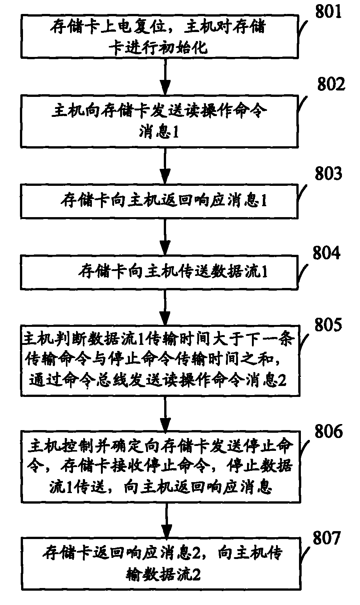

发明名称--一种存储卡总线操作方法
| 申请号 | CN200810104268.4 | 申请日 | 2008.04.17 | ||
| 公开（公告）号 | CN101266583A | 公开（公告）日 | 2008.09.17 | ||
| IPC分类号 | G06F13/16 | 申请（专利权）人 | 普天信息技术研究院有限公司; | ||
| 发明人 | 曹会扬;杨光敏; | 优先权号 |
摘要:
本发明公开了一种存储卡总线操作方法，通过命令总线发送当前传输命令消息之后，开始在数据总线传输当前传输命令消息对应的数据；如果确定当前传输命令消息对应的数据所需传输时间大于预设命令消息传输时间，则在数据总线传输当前传输命令消息对应的数据的过程中，通过命令总线发送下一传输命令消息；在当前传输命令消息对应的数据传输完毕后，传输下一传输命令消息对应的数据。利用本发明，可以在命令总线空闲的时候插入下一传输命令消息，因而，当数据总线传输完当前数据后，数据总线就可以直接传输下一传输命令消息对应的数据，而无需再进行等待，从而提高了总线的利用率以及存储卡总线的实际性能。
摘要附图:
